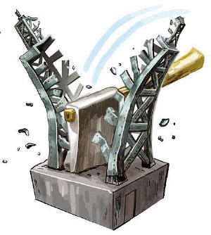
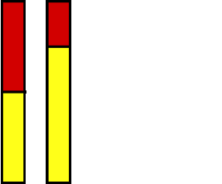
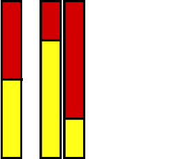
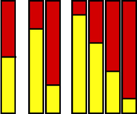
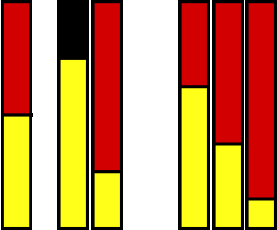
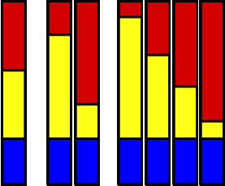
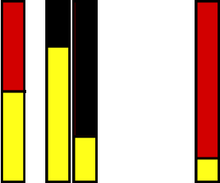
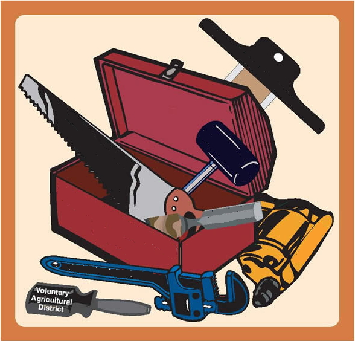
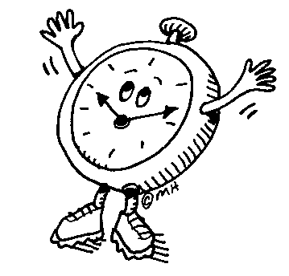

The Divvy ATP Meta-system

Divide and Conquer
- Order the axioms by relevance
- Try the top half
- Theorem? Done!
- Timeout? Need more or less!
- Try top quarter

- Try top three quarters

- etc.

- CounterSatisfiable? Need more!

Optimizations
- Try all axioms first
- Specify maximal number of axioms to use

- Use model finder before each proof attempt

- Aim for assurance before proof
- User selectable systems

- User selectable relevance ordering tool
- Time limits for all aspects, with dynamic update

Implementation
- C and JJParser library
- TPTPWorld infrastructure
- Available online
at tptp.org/cgi-bin/SystemOnTPTP